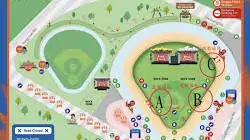
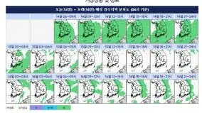
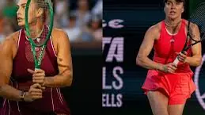
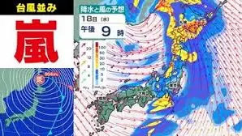
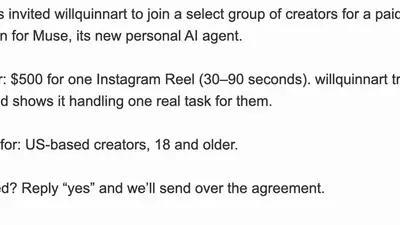
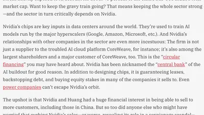

John Herrman
@jwherrman.bsky.social
· 11/14 03:01· 命中「AI agent」
Fed some of the Epstein files into a fresh Gmail account and now Google's AI agent sends me stuff like this every single morning

1 1000+ 次搜尋
4 100+ 次搜尋
6 100+ 次搜尋
9 200+ 次搜尋Social Lab（OpView 社群口碑資料庫）每週彙整各平台熱門事件。榜上的數據以圖表呈現， 這裡列出每週彙整的標題與觀測期間，點進去看完整排行。
 PTT
PTT
 Facebook
Facebook
 Dcard
Dcard
 Instagram
Instagram
 Facebook 意見領袖
Facebook 意見領袖
Social Lab 依社群聲量統計的各平台人氣意見領袖前三名。
Bluesky 的全站熱門話題，以英語圈的娛樂、體育、政治為主，僅供參考。
以 30 小時內、依讚數與轉發數排序，已過濾掉 AI 繪圖標籤與明顯洗版內容。
Fed some of the Epstein files into a fresh Gmail account and now Google's AI agent sends me stuff like this every single morning
I know Microsoft is saying the outage has nothing to do with security or penetration but I feel like the odds we find out it was somehow AI-agent related are pretty high?
50% of Claude output is served by this pointlessly polluting power station. Anthropic just entered into a deal with OnePWR to build 1.7 gigawatts MORE of this style of generation. Actively integrating Claude into your work = carbonisation of what used to be lean, clean digital processes
My speculation: this was an issue caused by the new AI system they migrated the FAA ATC to. Trump admin wants to downplay b/c of the implications on the AI bubble, especially after a week where Nvidia had its CEO ousted and investors are starting to flee AI related investments.
So... i'm pretty sure every big Instagram account just got an email like this. Meta offered me $500 just to pretend their AI shit is good Definitely means AI is 'inevitable' right? they're offering me a PS5 just to pretend I use it 🙄

Wrote about ur boy
I think this is more an indictment of how badly thought out the LLM rollout was than anything else. No creative task benefits from being run through a small model tuned for business emails and introducing it to people en masse as a "magic button" without context or training was frankly stupid
Trump Calls On American Gladiators To Finish Iran War https://theonion.com/trump-calls-on-american-gladiators-to-finish-iran-war/
(Reuters) - A Reuters review has identified more than $3 billion in Chinese computing projects built around Nvidia's restricted processors, even as the American chipmaker has said US export controls have effectively shut it out of [China's] AI data-centre market .. www.reuters.com/world/china/...
Every day there's a story like Claude Assists Teen Suicide or Data Center Contaminates All Water in Black Neighborhood or Teacher Caught Making CSAM Of Students With Grok or Musk Worlds First Trillionaire Thanks to AI and still people cheer this shit on. And for what? This tech is unnecessary.
The Trump admin does not want an AI caused nationwide fiasco in the same week Nvidia crashed. The entire AI bubble could deflate and push the US into recession. The way the admin officials are acting, it's more like they're ass covering than an attack or other issue.
“Families joined protests in seven cities nationwide on Wednesday, rallying against what they see as Google’s bid to entrench its AI models in schools, turn kids of all ages into Gemini guinea pigs, and hook them on AI.”
It may very well turn out that the Microsoft outage wasn't directly attributable to an LLM, but the duration and severity of the outage certainly is what you would get if you slashed your technical workforce and embarked on a campaign to deskill whoever's left
NEWS: Wyden and Neal Begin to Investigate Trump Administration Scheme to Take Cut of Nvidia AI Chip Sales to Chinese Companies; Trump and Commerce Department Reportedly Ignored Warnings About Former CEO’s Relationship with Alleged Chinese Spy
The only LLM that’s allowed to make my job more difficult is my Large Lazy Man
Nvidia is at the center of the incestuous, circular financing in the AI sector. It not only designs chips; it guarantees leases, backstops debt, invests in its own customers. Did that play any role in Trump's lax enforcement of export controls on Nvidia chips? www.thebulwark.com/p/jensen-hua...

i got curious about this so i did some back-of-envelope and I think that maxing a $200/month subscription LLM plan is in the same ballpark for power consumption as a 10-mile roundtrip EV commute over that same month